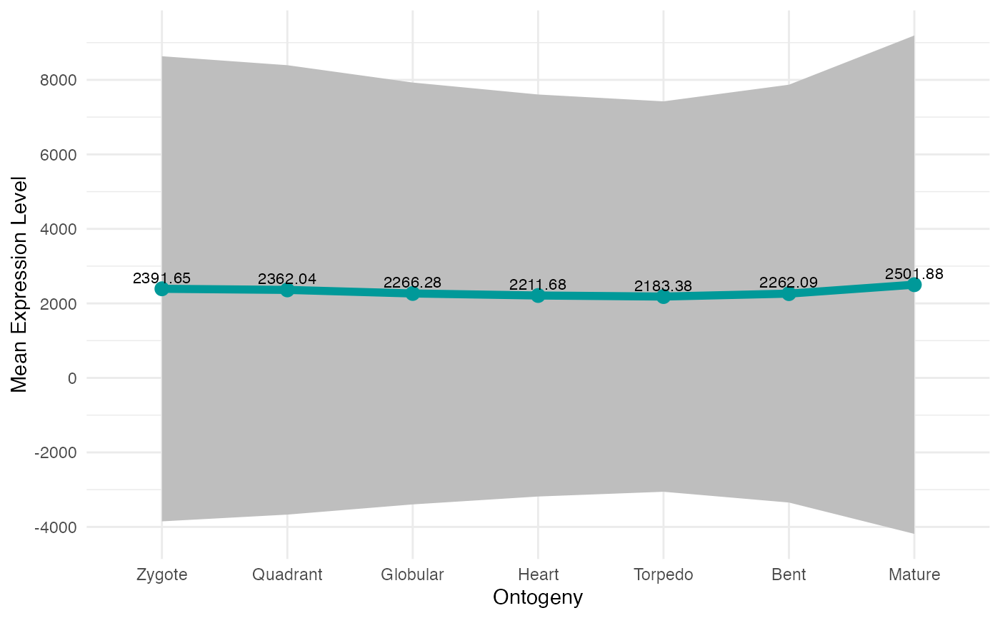

Plot the Mean Gene Expression Profiles with Optional Standard Deviation and Labels
Source:R/plot_gene_set_mean.R
plot_gene_set_mean.RdThis function visualizes the mean gene expression profiles for the stages defined in the input ExpressionSet.
It can also display the standard deviation as a shaded area around the mean, add labels with the expression values at each stage, and customize various plot parameters.
Usage
plot_gene_set_mean(
ExpressionSet,
y_ticks = 6,
digits = 2,
color = "#009999",
line_width = 2,
point_size = 3,
add_values = T,
xlab = "Ontogeny",
ylab = "Mean Expression Level",
add_sd = F,
yaxis_range = 4,
shadow_color = "grey"
)Arguments
- ExpressionSet
a standard PhyloExpressionSet or DivergenceExpressionSet object containing gene expression data.
- y_ticks
a numeric value specifying the number of ticks to be drawn on the y-axis. Default is 6.
- digits
a numeric value specifying the number of digits to display in the expression value labels. Default is 2.
- color
a string specifying the color of the line and points representing the mean expression. Default is
"#009999".- line_width
a numeric value specifying the line width for the mean expression line. Default is 2.
- point_size
a numeric value specifying the size of the points representing the mean expression values. Default is 3.
- add_values
a logical value indicating whether expression values should be displayed on the plot. Default is
TRUE.- xlab
a string specifying the label for the x-axis. Default is
"Ontogeny".- ylab
a string specifying the label for the y-axis. Default is
"Mean Expression Level".- add_sd
a logical value indicating whether the standard deviation should be shown as a shaded ribbon around the mean expression. Default is
FALSE.- yaxis_range
a numeric value specifying the extra range added to the y-axis when standard deviation is shown. Default is 4.
- shadow_color
a string specifying the color of the shaded area representing the standard deviation. Default is
"grey".
Examples
#In case you want the expression values show together with the standard deviation
plot_gene_set_mean(ExpressionSet = PhyloExpressionSetExample,
add_sd = TRUE)
#> Scale for y is already present.
#> Adding another scale for y, which will replace the existing scale.

#In case you would like for the expression values and the standard deviation don't show up
plot_gene_set_mean(ExpressionSet = PhyloExpressionSetExample,
add_values = FALSE)
